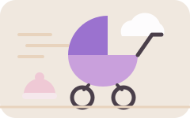

Beikost, Lebensmittel & Reaktionen
Altersgerechte Rezepte und ein Überblick, welche Lebensmittel dein Baby schon probiert hat und wie es darauf reagiert hat.
Jedes Baby ist einzigartig. Alles Baby nimmt dir im Familienalltag Arbeit ab und gibt dir konkrete Ideen für jeden Tag: was heute auf den Löffel kommt, was dein Baby bei diesem Wetter anzieht, wann das nächste Nickerchen ansteht und womit ihr gerade gut spielen könnt. Entstanden nach der Geburt unserer Tochter Hanna: kostenlos, ohne Konto, ohne Werbung.
Alle Daten bleiben auf deinem Gerät. Kein Konto, kein Tracking.
Alles Baby wird zu deinem persönlichen Begleiter.
Jede Funktion ist entstanden, weil sie im Alltag gefehlt hat.
Alles an einem Ort, gemacht für schnelle Antworten im Babyalltag.
Altersgerechte Rezepte und ein Überblick, welche Lebensmittel dein Baby schon probiert hat und wie es darauf reagiert hat.
Wie viele Schichten passen bei welcher Temperatur? Für drinnen, draußen und zum Schlafen.
Entwicklungsschritte festhalten und sehen, in welcher Phase dein Baby gerade ist. Jedes Kind entwickelt sich in seinem eigenen Tempo.
Ideen für heute zum Spielen, Singen und Entdecken, passend zum Alter deines Babys.
Wachphasen, Nickerchen und Nachtschlaf übersichtlich im Blick, damit du nicht alles im Kopf behalten musst.
Stillen, Fläschchen und Beikost schnell notiert. Auch nachts, mit einer Hand.
Wann kommt welcher Zahn? Dazu kurze, praktische Hinweise, was bei Beschwerden hilft.
Kleine Fragen, die im Alltag mit Baby ständig auftauchen, und eine schnelle Antwort darauf.
Was hatte mein Baby schon, und wie hat es reagiert? Alles notiert, dazu Ideen für die nächste Mahlzeit.
BeikostWann war eigentlich die letzte Flasche? Ein kurzer Blick in die App genügt.
Fütter-Tracking
Kalt und windig. Was ziehe ich meinem Baby an? Der Outfit Guide weiß es.
Outfit GuideKrabbelt mein Baby bald? Was passt gerade zu seiner Phase? Knappe Antworten und Spielideen statt langer Suche.
EntwicklungAlles Baby ist ein Dashboard für alles, was im Familienalltag zählt, damit mehr Ordnung und Leichtigkeit einziehen. Im Mittelpunkt steht die Beikost, dazu kommen Outfits, Meilensteine, Spielideen, Zahnen und Schlaf.
Die Idee entstand in den Mittagsschläfchen mit Hanna und ist mit dem Feedback von Freundinnen und Freunden gewachsen. Ein kostenloser Helfer, der Eltern ein bisschen Last abnimmt.
„Ich wollte eine App, die meine Fragen schnell beantwortet, mich liebevoll inspiriert und bei der meine Daten trotzdem nur mir gehören.“
Alles Baby ist eine Web-App: einmal öffnen, zum Home-Bildschirm hinzufügen, fertig. Dort erscheint das Baby-Body-Icon mit dem Namen deines Babys. Kein App-Store, kein Konto.
Die App läuft direkt im Browser. Ohne Store, ohne Download.
Ein Tipp im Teilen-Menü, und das App-Icon liegt auf deinem Handy.
Name, Geburtstag und Stichtag eingeben. Alles bleibt auf deinem Gerät.
Am Computer?
Code mit der Handykamera scannen und die App direkt auf dem Handy öffnen.
Alles Baby bleibt kostenlos, ohne Werbung und ohne Konto. Wenn dir die App hilft, freue ich mich über einen Kaffee. Nachts kann ich ihn gut gebrauchen.